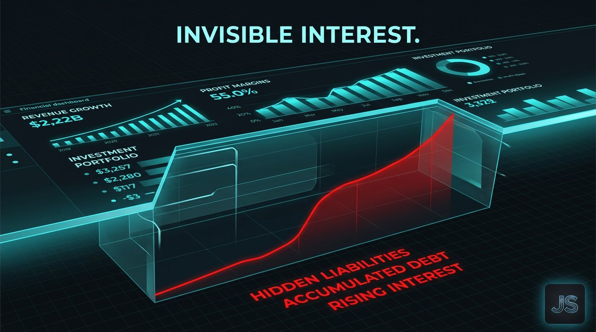
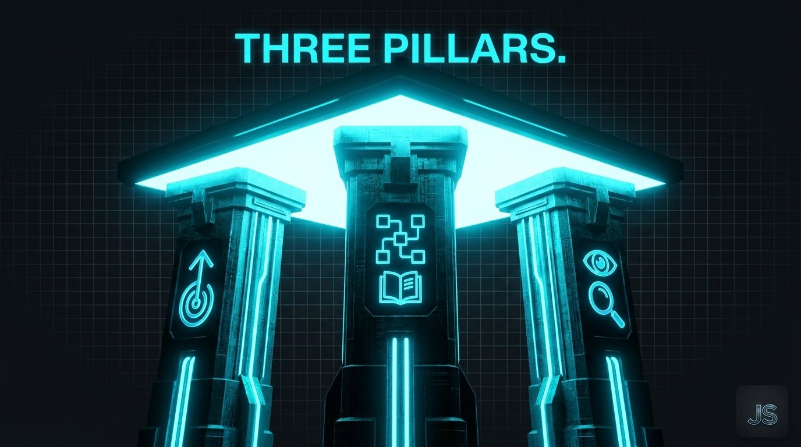

The Creative Shift August 27, 2026
Taste Debt
Every workflow you build without taste at the architecture layer is a loan.
Engineering has a name for the thing that quietly kills a codebase.
Technical debt. Every shortcut, every unreviewed decision, every “we'll fix it later” compounds until the whole system slows down.
Marketing has the same problem. Nobody's named it yet.
Call it taste debt.
What taste debt actually is
Every AI workflow encodes decisions. Which reference images the model sees. Which prompts get reused. Which brand rules live in the system prompt. Which outputs get approved and which get rejected.
Those decisions are taste. Someone made them, or nobody made them and the defaults took over.
Taste debt is what accumulates when nobody with judgment was in the room when the workflow got built. The system runs. Output ships. Nothing looks obviously broken.
But every run compounds the original absence of judgment. Month one, the work looks fine. Month six, the brand reads indistinguishable from three competitors. Month twelve, the CMO can't figure out why the pipeline slowed.
The debt was there the whole time. It just wasn't on any dashboard.
Why the CFO can't see it
Technical debt eventually shows up in engineering velocity. Sprints slow down. Bug counts rise. You can measure it.
Taste debt shows up in the numbers finance already stopped attributing to brand. Share of search drifts down. Branded search volume flattens. Direct traffic softens. Pipeline gets longer. Close rates dip.
Every one of those metrics has ten other explanations. Nobody points at the workflow that was built without a creative director in the room eighteen months ago.
That's the trap. Taste debt is invisible until it's expensive, and by the time it's expensive, it's been compounding for a year.

Where the debt gets booked
Three places, mostly.
The system prompt. Every AI workflow has one. If the person who wrote it doesn't know the brand cold, every output starts from the wrong foundation and compounds from there.
The reference library. The images, tone samples, and prior work the model gets fed to stay on brand. If the library was assembled from whatever was handy, the model learns the wrong signal and reproduces it forever.
The review gate. What gets approved teaches the workflow what “good” means. If the reviewer is checking for typos instead of taste, the workflow learns that polished equals approved. Wallpaper starts shipping at scale.
Fix all three and the debt stops accumulating. Fix none and it compounds every quarter.

QA is not the answer
The reflex is to add more review. Another approval layer. A brand police function.
QA can catch mistakes. It can't rewrite the workflow that produced them.
If the underlying system was designed without taste at the architecture layer, no amount of downstream review will fix it. You'll just reject more work, slow the pipeline down, and end up with the same drift plus a bottleneck.
Taste has to sit upstream. In the prompt, in the references, in the review criteria. Not in a final gate that catches what already got made wrong.
The strategic implication
Companies that get this right in the next twelve months will have workflows that produce distinctive work at scale.
Companies that don't will have workflows that produce polished, competent, forgettable output at scale, and a CMO who can't explain to the board why the brand equity numbers keep drifting.
The debt is quiet. The consequences aren't.
One for the road
Every workflow you build without taste at the architecture layer is a loan.
The interest is compounding right now.
Want this kind of thinking on your brand?
The Creative Shift is the thinking behind the client work. If you lead a brand and want this on your side of the table, let’s talk.